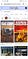

Asimov model of blogging

Write write write whatever happens that how Asimov published 400 books lit of them being best sellers. It turns out this same model applies for the blog which just is another form of medium like a book. If you do with like this you can drip by drip build and own an entire tech crunch like and medium like platform. I wait to have an idea that people like you for sure will never write. It helps to know how SEO and search engine works but I do believe that in the long run that’s real and personal content that will best algorithmic SEO driven links an clicks optimized ones.
You may come up with framework for better blogs and name it Isaac asimov model.
